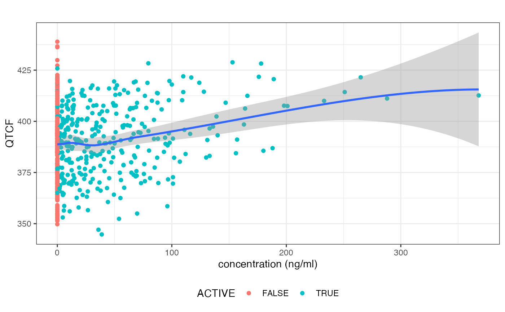
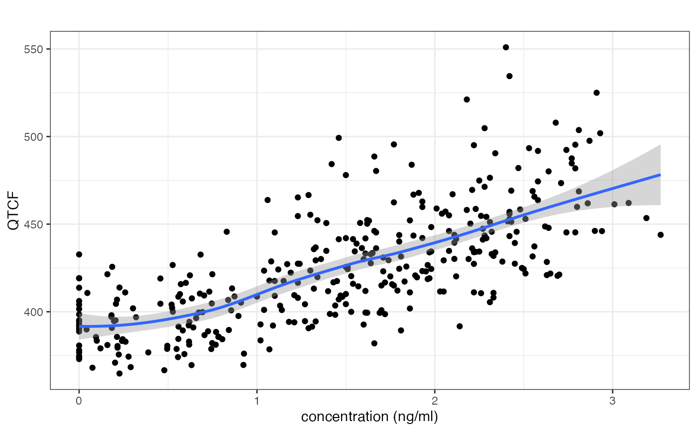

cqtc_plot(obj, param ="QTCF", color =NULL, fit =TRUE, method ="loess", x_label ="concentration (ng/ml)", y_label =NULL, title ="",...)
Arguments
obj
A cqtc object.
param
The parameter to plot on the y axis.
color
The column to be used for coloring.
fit
Show regression fit.
method
The method for geom_smooth.
x_label
The x axis label.
y_label
The y axis label.
title
The plot title.
...
Further parameters to geom_point()
Value
A ggplot object.
Examples
library(dplyr)library(magrittr)verapamil_cqtc%>%cqtc_plot(color ="ACTIVE")#> `geom_smooth()` using formula = 'y ~ x'dofetilide_cqtc%>%filter(ACTIVE==1)%>%cqtc_plot()#> `geom_smooth()` using formula = 'y ~ x'